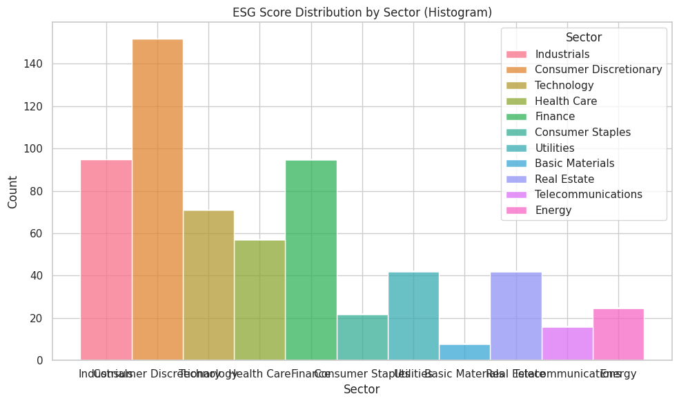
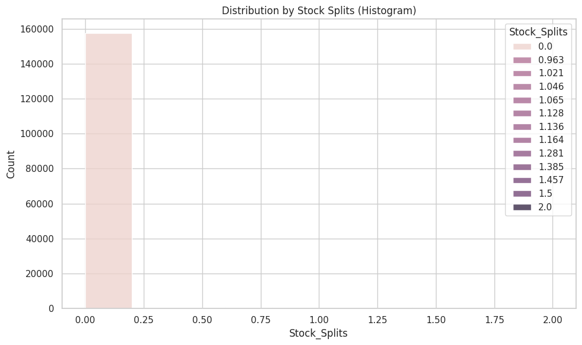
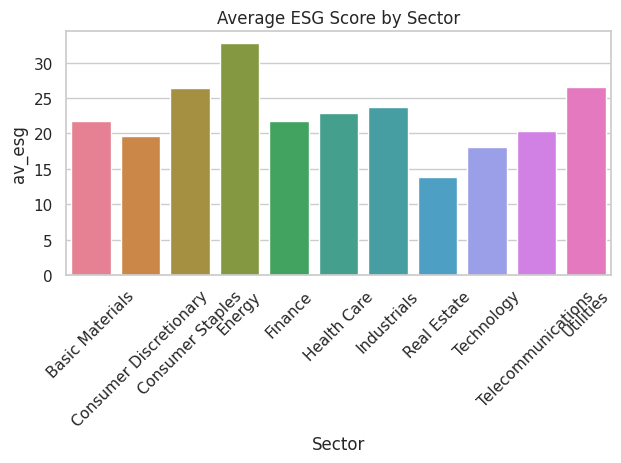
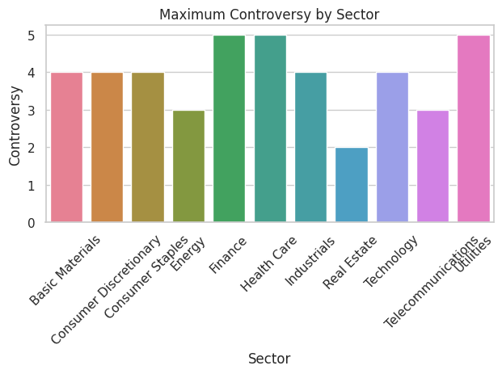
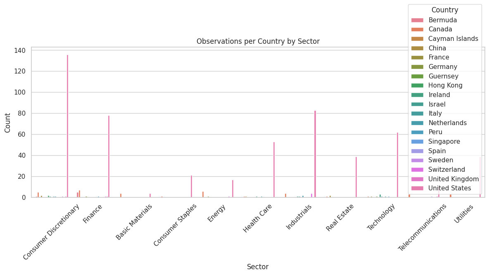

#An ESG rating evaluates each company's overall risk to sustainablity measures. Theses sustainablity measures include: long-term governmental, environmenta, and societal risks.
#A company can analyze its ESG rating in order to make efficient revisions and conservable measures in order to reinforce sustainability.
#Sustainability has become a significant portion of business, that promotes the efficiency of resource allegation.#Title: ESG Data Analysis
# This is formatted as code#Introduction:
#Background
#Statement of the Problem: How does ESG rating differ between Countries and Sectors of businesses?
#How does Average ESG rating differ between Sectors of businesses?
#What business 3 Sectors have the top Controversy Levels?
#How does each country contribute to ESG by business Sector?#Data Collection
#One can collect data through Anaconda, utilizing Spyder.
#To scrape websites using Selenium, one should first provide import statements being utilized throughout the code.
#Next, One should utilize driver to open the designated url and scrape the data from Chrome
#Once the webpage is intitialized, utilized find_elements to extract data points. One can find elements by name, class name, tagname, XPath, id, link text, partial link text, or css selector.
#One should then create a for loop incorporatind find_elements to scrap elements into a data frame
#After scraping is complete, one should merge or concat the data frames into one.
#One should additionally clean data frame for proper analysis#Descriptive Statistics
import pandas as pd
import seaborn as sns
url_2024 = "https://bcdanl.github.io/data/esg_proj_2024_data.csv"
esg_proj_2024_data = pd.read_csv(url_2024)url = "https://bcdanl.github.io/data/stock_history_2023.csv"
stock_history_2023 = pd.read_csv(url)Ungrouped Descriptive Statistics for ESG Data
overall_stats_esg = esg_proj_2024_data.describe()
overall_stats_esg| Year | Market_Cap | IPO_Year | Total_ESG | Environmental | Social | Governance | Controversy | |
|---|---|---|---|---|---|---|---|---|
| count | 625.0 | 6.250000e+02 | 201.000000 | 625.000000 | 602.000000 | 602.000000 | 602.000000 | 573.000000 |
| mean | 2024.0 | 7.244169e+10 | 2000.179104 | 21.567040 | 5.747342 | 9.017774 | 6.819103 | 1.942408 |
| std | 0.0 | 2.286855e+11 | 12.697549 | 7.041637 | 5.200518 | 3.567490 | 2.371114 | 0.801113 |
| min | 2024.0 | 1.986640e+08 | 1925.000000 | 6.400000 | 0.000000 | 0.800000 | 2.400000 | 0.000000 |
| 25% | 2024.0 | 1.117340e+10 | 1994.000000 | 16.300000 | 1.800000 | 6.700000 | 5.225000 | 1.000000 |
| 50% | 2024.0 | 2.439046e+10 | 2000.000000 | 21.100000 | 3.950000 | 8.900000 | 6.300000 | 2.000000 |
| 75% | 2024.0 | 5.961247e+10 | 2009.000000 | 26.000000 | 8.875000 | 11.175000 | 7.900000 | 2.000000 |
| max | 2024.0 | 3.019130e+12 | 2022.000000 | 52.000000 | 25.300000 | 22.500000 | 19.400000 | 5.000000 |
#Grouped Descriptive Statistics for ESG Data
grouped_stats_esg = esg_proj_2024_data.groupby('Sector').describe()
grouped_stats_esg| Year | Market_Cap | ... | Governance | Controversy | |||||||||||||||||
|---|---|---|---|---|---|---|---|---|---|---|---|---|---|---|---|---|---|---|---|---|---|
| count | mean | std | min | 25% | 50% | 75% | max | count | mean | ... | 75% | max | count | mean | std | min | 25% | 50% | 75% | max | |
| Sector | |||||||||||||||||||||
| Basic Materials | 8.0 | 2024.0 | 0.0 | 2024.0 | 2024.0 | 2024.0 | 2024.0 | 2024.0 | 8.0 | 4.152917e+10 | ... | 6.025 | 7.5 | 7.0 | 2.714286 | 1.112697 | 1.0 | 2.00 | 3.0 | 3.50 | 4.0 |
| Consumer Discretionary | 152.0 | 2024.0 | 0.0 | 2024.0 | 2024.0 | 2024.0 | 2024.0 | 2024.0 | 152.0 | 6.275165e+10 | ... | 6.700 | 10.6 | 147.0 | 1.972789 | 0.661521 | 0.0 | 2.00 | 2.0 | 2.00 | 4.0 |
| Consumer Staples | 22.0 | 2024.0 | 0.0 | 2024.0 | 2024.0 | 2024.0 | 2024.0 | 2024.0 | 22.0 | 5.256891e+10 | ... | 5.575 | 9.5 | 22.0 | 2.590909 | 0.590326 | 2.0 | 2.00 | 3.0 | 3.00 | 4.0 |
| Energy | 25.0 | 2024.0 | 0.0 | 2024.0 | 2024.0 | 2024.0 | 2024.0 | 2024.0 | 25.0 | 7.331996e+10 | ... | 7.975 | 10.4 | 24.0 | 2.041667 | 0.750604 | 1.0 | 1.75 | 2.0 | 3.00 | 3.0 |
| Finance | 95.0 | 2024.0 | 0.0 | 2024.0 | 2024.0 | 2024.0 | 2024.0 | 2024.0 | 95.0 | 4.896501e+10 | ... | 11.775 | 19.4 | 90.0 | 1.800000 | 0.796058 | 1.0 | 1.00 | 2.0 | 2.00 | 5.0 |
| Health Care | 57.0 | 2024.0 | 0.0 | 2024.0 | 2024.0 | 2024.0 | 2024.0 | 2024.0 | 57.0 | 8.558134e+10 | ... | 8.425 | 11.6 | 57.0 | 2.245614 | 0.851064 | 1.0 | 2.00 | 2.0 | 3.00 | 5.0 |
| Industrials | 95.0 | 2024.0 | 0.0 | 2024.0 | 2024.0 | 2024.0 | 2024.0 | 2024.0 | 95.0 | 3.620958e+10 | ... | 7.100 | 10.3 | 83.0 | 1.891566 | 0.811684 | 0.0 | 1.00 | 2.0 | 2.00 | 4.0 |
| Real Estate | 42.0 | 2024.0 | 0.0 | 2024.0 | 2024.0 | 2024.0 | 2024.0 | 2024.0 | 42.0 | 2.315503e+10 | ... | 6.300 | 10.1 | 28.0 | 1.142857 | 0.448395 | 0.0 | 1.00 | 1.0 | 1.00 | 2.0 |
| Technology | 71.0 | 2024.0 | 0.0 | 2024.0 | 2024.0 | 2024.0 | 2024.0 | 2024.0 | 71.0 | 2.263839e+11 | ... | 6.600 | 11.5 | 59.0 | 1.745763 | 0.842681 | 0.0 | 1.00 | 2.0 | 2.00 | 4.0 |
| Telecommunications | 16.0 | 2024.0 | 0.0 | 2024.0 | 2024.0 | 2024.0 | 2024.0 | 2024.0 | 16.0 | 6.773631e+10 | ... | 7.400 | 8.8 | 16.0 | 2.000000 | 0.730297 | 1.0 | 1.75 | 2.0 | 2.25 | 3.0 |
| Utilities | 42.0 | 2024.0 | 0.0 | 2024.0 | 2024.0 | 2024.0 | 2024.0 | 2024.0 | 42.0 | 3.135210e+10 | ... | 5.700 | 7.3 | 40.0 | 2.100000 | 0.841244 | 1.0 | 2.00 | 2.0 | 2.00 | 5.0 |
11 rows × 64 columns
plt.figure(figsize=(10, 6))
sns.histplot(data=esg_proj_2024_data, x='Sector', hue='Sector', bins=20, multiple='stack')
plt.title('ESG Score Distribution by Sector (Histogram)')
plt.tight_layout()
plt.show()
Ungrouped Descriptive Statistics for Stock Data
overall_stats_stock = stock_history_2023.describe()
overall_stats_stock| Year | Open | High | Low | Close | Volume | Dividend | Stock_Splits | |
|---|---|---|---|---|---|---|---|---|
| count | 157750.0 | 157750.000000 | 157750.000000 | 157750.000000 | 157750.000000 | 1.577500e+05 | 157750.000000 | 157750.000000 |
| mean | 2023.0 | 138.386432 | 139.868734 | 136.982792 | 138.463043 | 4.831341e+06 | 0.008351 | 0.000121 |
| std | 0.0 | 303.569315 | 306.850465 | 300.707721 | 303.837231 | 2.183286e+07 | 0.134062 | 0.013334 |
| min | 2023.0 | 1.030000 | 1.060000 | 0.780000 | 0.980000 | 0.000000e+00 | 0.000000 | 0.000000 |
| 25% | 2023.0 | 39.326417 | 39.799928 | 38.896336 | 39.342437 | 8.251000e+05 | 0.000000 | 0.000000 |
| 50% | 2023.0 | 79.447571 | 80.300088 | 78.523761 | 79.422333 | 1.694200e+06 | 0.000000 | 0.000000 |
| 75% | 2023.0 | 146.473485 | 147.876977 | 144.995217 | 146.545551 | 3.867075e+06 | 0.000000 | 0.000000 |
| max | 2023.0 | 7028.500000 | 7075.000000 | 6997.910156 | 7024.819824 | 1.543911e+09 | 35.000000 | 2.000000 |
#Grouped Descriptive Statistics for Stock Data
grouped_stats_stock = stock_history_2023.groupby('Stock_Splits').describe()
grouped_stats_stock| Year | Open | ... | Volume | Dividend | |||||||||||||||||
|---|---|---|---|---|---|---|---|---|---|---|---|---|---|---|---|---|---|---|---|---|---|
| count | mean | std | min | 25% | 50% | 75% | max | count | mean | ... | 75% | max | count | mean | std | min | 25% | 50% | 75% | max | |
| Stock_Splits | |||||||||||||||||||||
| 0.000 | 157736.0 | 2023.0 | 0.0 | 2023.0 | 2023.0 | 2023.0 | 2023.0 | 2023.0 | 157736.0 | 138.392003 | ... | 3866958.0 | 1.543911e+09 | 157736.0 | 0.008322 | 0.133513 | 0.000 | 0.000 | 0.000 | 0.000 | 35.000 |
| 0.963 | 1.0 | 2023.0 | NaN | 2023.0 | 2023.0 | 2023.0 | 2023.0 | 2023.0 | 1.0 | 128.777257 | ... | 356400.0 | 3.564000e+05 | 1.0 | 4.845000 | NaN | 4.845 | 4.845 | 4.845 | 4.845 | 4.845 |
| 1.021 | 1.0 | 2023.0 | NaN | 2023.0 | 2023.0 | 2023.0 | 2023.0 | 2023.0 | 1.0 | 51.747517 | ... | 1800700.0 | 1.800700e+06 | 1.0 | 0.000000 | NaN | 0.000 | 0.000 | 0.000 | 0.000 | 0.000 |
| 1.046 | 1.0 | 2023.0 | NaN | 2023.0 | 2023.0 | 2023.0 | 2023.0 | 2023.0 | 1.0 | 36.780717 | ... | 1535500.0 | 1.535500e+06 | 1.0 | 0.000000 | NaN | 0.000 | 0.000 | 0.000 | 0.000 | 0.000 |
| 1.065 | 1.0 | 2023.0 | NaN | 2023.0 | 2023.0 | 2023.0 | 2023.0 | 2023.0 | 1.0 | 53.657972 | ... | 7357100.0 | 7.357100e+06 | 1.0 | 0.000000 | NaN | 0.000 | 0.000 | 0.000 | 0.000 | 0.000 |
| 1.128 | 1.0 | 2023.0 | NaN | 2023.0 | 2023.0 | 2023.0 | 2023.0 | 2023.0 | 1.0 | 217.839992 | ... | 6387700.0 | 6.387700e+06 | 1.0 | 0.000000 | NaN | 0.000 | 0.000 | 0.000 | 0.000 | 0.000 |
| 1.136 | 1.0 | 2023.0 | NaN | 2023.0 | 2023.0 | 2023.0 | 2023.0 | 2023.0 | 1.0 | 43.672893 | ... | 4326600.0 | 4.326600e+06 | 1.0 | 0.000000 | NaN | 0.000 | 0.000 | 0.000 | 0.000 | 0.000 |
| 1.164 | 1.0 | 2023.0 | NaN | 2023.0 | 2023.0 | 2023.0 | 2023.0 | 2023.0 | 1.0 | 202.701564 | ... | 998900.0 | 9.989000e+05 | 1.0 | 0.000000 | NaN | 0.000 | 0.000 | 0.000 | 0.000 | 0.000 |
| 1.281 | 1.0 | 2023.0 | NaN | 2023.0 | 2023.0 | 2023.0 | 2023.0 | 2023.0 | 1.0 | 54.164016 | ... | 21031104.0 | 2.103110e+07 | 1.0 | 0.000000 | NaN | 0.000 | 0.000 | 0.000 | 0.000 | 0.000 |
| 1.385 | 1.0 | 2023.0 | NaN | 2023.0 | 2023.0 | 2023.0 | 2023.0 | 2023.0 | 1.0 | 25.075378 | ... | 6372400.0 | 6.372400e+06 | 1.0 | 0.000000 | NaN | 0.000 | 0.000 | 0.000 | 0.000 | 0.000 |
| 1.457 | 1.0 | 2023.0 | NaN | 2023.0 | 2023.0 | 2023.0 | 2023.0 | 2023.0 | 1.0 | 10.866301 | ... | 10459795.0 | 1.045980e+07 | 1.0 | 0.000000 | NaN | 0.000 | 0.000 | 0.000 | 0.000 | 0.000 |
| 1.500 | 1.0 | 2023.0 | NaN | 2023.0 | 2023.0 | 2023.0 | 2023.0 | 2023.0 | 1.0 | 69.574287 | ... | 3029700.0 | 3.029700e+06 | 1.0 | 0.000000 | NaN | 0.000 | 0.000 | 0.000 | 0.000 | 0.000 |
| 2.000 | 3.0 | 2023.0 | 0.0 | 2023.0 | 2023.0 | 2023.0 | 2023.0 | 2023.0 | 3.0 | 54.623190 | ... | 3262950.0 | 3.608500e+06 | 3.0 | 0.000000 | 0.000000 | 0.000 | 0.000 | 0.000 | 0.000 | 0.000 |
13 rows × 56 columns
plt.figure(figsize=(10, 6))
sns.histplot(data=stock_history_2023, x='Stock_Splits', hue='Stock_Splits', bins=10, multiple='stack')
plt.title('Distribution by Stock Splits (Histogram)')
plt.tight_layout()
plt.show()
#Exploratory Data Analysis
#How does Average ESG rating differ between Sectors of businesses?
gra = esg_proj_2024_data.groupby('Sector').agg(
av_esg = ("Total_ESG", "mean")
)
gra| av_esg | |
|---|---|
| Sector | |
| Basic Materials | 21.750000 |
| Consumer Discretionary | 19.588158 |
| Consumer Staples | 26.359091 |
| Energy | 32.788000 |
| Finance | 21.754737 |
| Health Care | 22.815789 |
| Industrials | 23.678947 |
| Real Estate | 13.880952 |
| Technology | 18.129577 |
| Telecommunications | 20.406250 |
| Utilities | 26.547619 |
sns.set(style='whitegrid')
sns.barplot(data=gra, x='Sector',
y='av_esg',
estimator='mean',
ci='sd',
hue = 'Sector') # ci='sd' shows standard deviation bars
plt.title('Average ESG Score by Sector')
plt.xticks(rotation=45) # rotate if sector names are long
plt.tight_layout()FutureWarning:
The `ci` parameter is deprecated. Use `errorbar='sd'` for the same effect.
sns.barplot(data=gra, x='Sector',
#When looking at the data by Sector, on average, Energy businesses obtain the highest ESG score. On the other hand, Real Estate businesses obtain the lowest average ESG Score.
#What business 3 Sectors have the top Controversy Levels?
controversy = esg_proj_2024_data.groupby('Sector')['Controversy'].max()
top_3_controversy_sectors = controversy.nlargest(3)
top_3_controversy_sectors| Controversy | |
|---|---|
| Sector | |
| Finance | 5.0 |
| Health Care | 5.0 |
| Utilities | 5.0 |
controversy_df = controversy.reset_index()
sns.barplot(data=controversy_df,
x='Sector',
y='Controversy',
hue = 'Sector')
plt.title('Maximum Controversy by Sector') # Added a title for clarity
plt.xticks(rotation=45) # rotate if sector names are long
plt.tight_layout()
plt.show() # Added plt.show() to display the plot
#The Top 3 business sectors with the highest Controversery ratings are Finanance, Health Care, and Utilities.
#How does each country contribute to ESG by business Sector?
country = esg_proj_2024_data.groupby(['Country', 'Sector']).size()
country| 0 | ||
|---|---|---|
| Country | Sector | |
| Bermuda | Consumer Discretionary | 1 |
| Finance | 5 | |
| Canada | Basic Materials | 4 |
| Consumer Discretionary | 5 | |
| Consumer Staples | 1 | |
| Energy | 6 | |
| Finance | 7 | |
| Health Care | 1 | |
| Industrials | 4 | |
| Real Estate | 1 | |
| Technology | 1 | |
| Telecommunications | 3 | |
| Utilities | 3 | |
| Cayman Islands | Health Care | 1 |
| China | Consumer Discretionary | 2 |
| Real Estate | 2 | |
| Technology | 1 | |
| France | Energy | 1 |
| Germany | Finance | 1 |
| Guernsey | Technology | 1 |
| Hong Kong | Consumer Discretionary | 2 |
| Ireland | Consumer Discretionary | 1 |
| Health Care | 1 | |
| Industrials | 1 | |
| Technology | 3 | |
| Israel | Industrials | 1 |
| Technology | 1 | |
| Italy | Consumer Discretionary | 1 |
| Netherlands | Consumer Discretionary | 1 |
| Health Care | 1 | |
| Industrials | 2 | |
| Technology | 1 | |
| Peru | Finance | 1 |
| Singapore | Technology | 1 |
| Spain | Telecommunications | 1 |
| Sweden | Consumer Discretionary | 1 |
| Switzerland | Energy | 1 |
| Finance | 1 | |
| Industrials | 4 | |
| United Kingdom | Consumer Discretionary | 1 |
| Finance | 1 | |
| Telecommunications | 1 | |
| United States | Basic Materials | 4 |
| Consumer Discretionary | 136 | |
| Consumer Staples | 21 | |
| Energy | 17 | |
| Finance | 78 | |
| Health Care | 53 | |
| Industrials | 83 | |
| Real Estate | 39 | |
| Technology | 62 | |
| Telecommunications | 11 | |
| Utilities | 39 |
country = esg_proj_2024_data.groupby(['Country', 'Sector']).size().reset_index(name='Count')
plt.figure(figsize=(12, 6))
sns.barplot(data=country,
x='Sector',
y='Count',
hue='Country')
plt.title('Observations per Country by Sector')
plt.xticks(rotation=45)
plt.tight_layout()
plt.show()
#As shown by the graph, the United States contains the most businesses and businesses sectors across the data frame.
#Signifigance of the Project
#One can utilze these data findings to see on a global scale, which countries are contibuting most to high ESG. Additionally, one can further evalute which business sectors in each country need priortizing towards their ESG score.
#References
# Yahoo Finance https://finance.yahoo.com/
# Utilized Chatgpt to make graphs more appealing